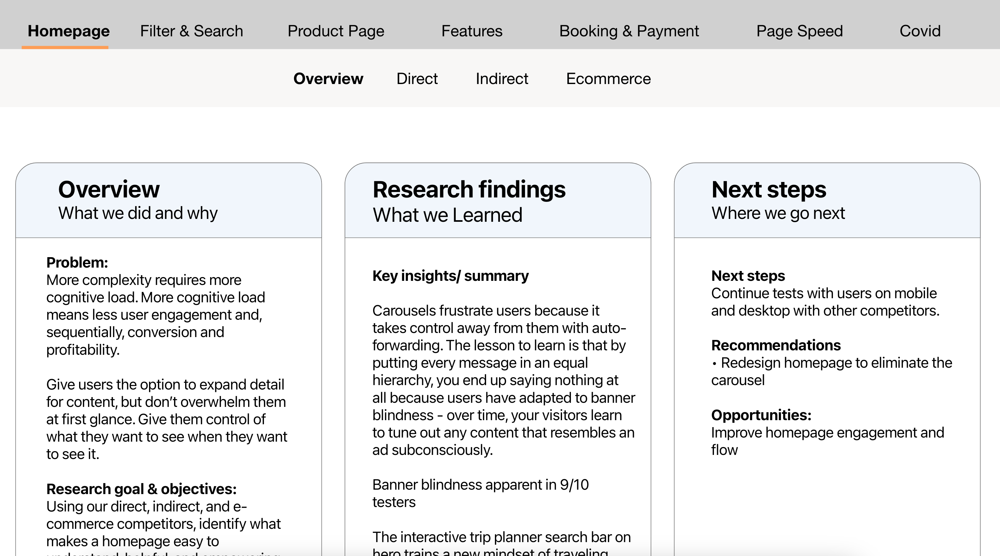

Collette
This family-owned company, operational since 1918, offers guided tours to all seven continents and serves various channels, including direct-to-consumers, groups, and agents.
Research Process
- 
.png )

-
To initiate the project, we commenced a comprehensive research process to gain a deeper understanding of the target audience and their requirements. We utilized a combination of competitive analysis, and usability testing to collect data. Through our research, we identified several crucial insights: Customers often experience difficulties in locating the information they require, resulting in frustration and eventual abandonment of the website. The website's design is outdated and unattractive, making it challenging to interact with the content. Customers desire a more straightforward booking process that is user-friendly and straightforward to navigate. My primary responsibility was to conduct a competitive analysis of 14 direct competitors, 10 indirect competitors, and 10 e-commerce entities, to gain insight into the competitive landscape and identify opportunities and shortcomings. This information helped inform our design decisions.
-
After presenting the competitive analysis to the team and deliberating on the key priorities, I proceeded to organize unmoderated balanced comparison tests between our website and those of our competitors, as part of the preparation for the website redesign.
-
Upon collecting the outcomes of user testing on various features to be reviewed for the redesign, I incorporated those insights into the document and created a prototype to facilitate the direct sharing of information with stakeholders.View Prototyped Research Document
Design Process

.png)

-
We worked with our internal creative department closely as they evolved the brand redesign to align ideas and keep consistency. We worked additionally with an external agency the business hired to aid in the redesign process as resources internally were stretched. My role on our team was to provide low-fidelity wireframe versions that tied in our findings from user testing and competitive research.
-
As we progressed with the redesign, it became clear that maintaining consistency across all pages would be challenging without proper documentation. To ensure a consistent brand image and establish trust with users upon the site's launch, I prioritized developing a comprehensive design system that focused on button UI, responsive typography, and color selection as key baseline elements.
-
Another crucial aspect we needed to address was the handoff process to developers, especially given that in the past, UX designers were expected to produce front-end code for all projects when the team was larger. With a limited number of UX designers and a tight timeline, we decided to use Zeplin - a tool I had previously utilized in other roles.
Delivery Process
.png)
-
Through this experience, we gained valuable insights into our internal team collaboration processes that will help us increase efficiency in the future. We also acquired important knowledge about redesign projects that will enable us to approach future projects with greater confidence. Although our original release plan was not successful, what we learned was invaluable for our future success as a team, and for our users who now have a vastly improved website that will continue to adapt to their needs over time. We are currently conducting usability tests on the staged version of the website and reevaluating the project timeline before relaunch.
View Prototype